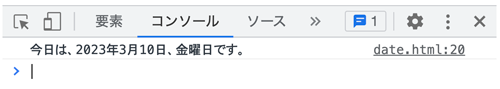

Dateオブジェクト - 状況に応じた処理
- 日付を取得して表示
組み込みオブジェクト
- 関数と同じくオブジェクトの場合も、JavaScriptがあらかじめ用意しているオブジェクトがあります
- これを「組み込みオブジェクト」と呼びます
《主な組み込みオブジェクト一覧》
| オブジェクト名 | 説明 |
|---|---|
| Object | すべてのオブジェクトの元となるオブジェクト |
| Date | 日時操作機能を持つオブジェクト |
| Math | 計算機能を持つオブジェクト |
| Array | 配列操作機能を持つオブジェクト |
| String | 文字列操作機能を持つオブジェクト |
Objectオブジェクト
- 波括弧で初期化したオブジェクトは、Objectオブジェクトになります
- よって、連想配列は「Objectオブジェクト」です
- すべてのオブジェクトは、この「Objectオブジェクト」を元にして作られています
- 「Objectオブジェクト」が持つプロパティとメソッドはすべてのオブジェクトで利用することが可能です
Dateオブジェクト
- JavaScriptに用意されている組み込みオブジェクト
- Dateコンストラクタを引数なしで実行すると、現在の日付時刻を管理する「Dateオブジェクト」が生成される
- JavaScript の日時は、UTC の 1970 年 1 月 1 日 0 時からのミリ秒としてで計られます
- 1 日は 86,400,000 ミリ秒です
- JavaScript の Date オブジェクトの範囲は、UTC の 1970 年 1 月 1 日に対して -100,000,000 日から 100,000,000 日です
- JavaScript の Date オブジェクトは、地方時方式はもちろん、UTC (世界時) 方式の値もサポートします
- グリニッジ標準時 (GMT) としても知られる UTC は、世界時標準によって設定される時間を指します
- 地方時は、JavaScript を実行しているコンピュータ（実行しているパソコン）からわかる時刻です
- JavaScript Date をコンストラクタではない状況 (すなわち new 演算子を伴わない) で呼び出すと、現在の日時を表す文字列が返ります
現在の日付時刻を管理するDateオブジェクトを生成
- 指定した時点で日付時刻を管理するDateオブジェクトを生成するには、年（西暦4桁）、月、日、時間、分、秒をそれぞれ別々の整数値として引渡します
- 時間は24時間制で指定
- 月は1月は「0」、2月は「1」と、月の数字から１を引いて指定する
const now = new Date();
たとえば、2012年７月９日15時55分0秒のDateオブジェクトを生成するには
const theDate = new Date(2012, 06, 09, 15, 55, 0);
たとえば、2012年７月９日午前0時のDateオブジェクトを生成するには
const myDate = new Date(2012, 06, 09);
Dateオブジェクトのメソッド
- いったんDateオブジェクトを生成すると、あらかじめ用意されている日付時刻操作のメソッドが使用できる
{kind=link}
たとえば、「time1」「time2」の２つのDateオブジェクトがあるとき、その時間差をミリ秒単位で求め、変数「theDiff」に格納する
theDiff = time1.getTime() - time2.getTime();
現在の日付日時を管理するDateオブジェクトを生成する
- Dateオブジェクトをそのまま document.write()メソッドに渡すと、toString()という「オブジェクトのデータを文字列形式に変換するメソッド」が自動的に呼び出される
<script> const now = new Date(); console.log(now); </script>
《Dateオブジェクトの主なメンバ》
| メンバ | 説明 |
|---|---|
| getFullYear() | 年を取得する |
| getMonth() | 月を取得する |
| getDate() | 日を取得する |
| getDay() | 曜日を取得する |
| getHours() | 時を取得する |
| getMinutes() | 分を取得する |
| getSeconds() | 秒を取得する |
| getMilliseconds() | ミリ秒を取得する |
| setFullYear() | 年を設定する |
| setMonth() | 月を設定する |
| setDate() | 日を設定する |
| setDay() | 曜日を設定する |
| setHours() | 時を設定する |
| setMinutes() | 分を設定する |
| setSeconds() | 秒を設定する |
| setMilliseconds() | ミリ秒を設定する |
| toDateString() | 日付文字列を取得する |
| toTimeString() | 時刻文字列を取得する |
| toLocaleDateString() | ローカル日付文字列を取得する |
| toLocaleTimeString() | ローカル時刻文字列を取得する |
| toString() | 文字列を取得する |
・データ（プロパティ）の場合
オブジェクト.プロパティ
・機能（メソッド）の場合
オブジェクト.メソッド()
例題（今日の年月日、現在の時刻、曜日を表示）
consoleに表示
<script> const today = new Date(); const year = today.getFullYear(); const month = today.getMonth() + 1; const date = today.getDate(); const hour = today.getHours(); const minute = today.getMinutes(); const second = today.getSeconds(); const day = today.getDay(); const week = ['日','月','火','水','木','金','土']; const str = `今日は、${year}年${month}月${date}日、${week[day]}曜日です。`; console.log(str); </script>

条件が成り立つ場合の処理とそれ以外の処理
if( 条件が真である場合 ) {
真の結果を表示する
} else {
偽を表示する
}
日時によって違う処理をする
- 状況に応じて処理をする
- 午前と午後（12時前か後かを判別）
<p id="ans">ここに表示</p> <script> const today = new Date(); const hour = today.getHours(); const element = document.querySelector('#ans'); if(hour <= 12) { element.textContent = `AM`; } else { element.textContent = `PM`; } </script>
時間によってメッセージを変更する
<p id="ans">ここに表示</p> <script> const today = new Date(); const hour = today.getHours(); const element = document.querySelector('#ans'); if (hour < 12) { element.textContent = `morning`; } else if (hour < 18) { element.textContent = `afternoon`; } else if (hour < 24) { element.textContent = `evening`; } </script>
土日と平日
- switch文の場合
<p id="ans">ここに表示</p> <script> const today = new Date(); const day = today.getDay(); const element = document.querySelector('#ans'); switch(day){ case 0: case 6: element.innerHTML = `<img src="img/hday.jpg">`; break; default: element.innerHTML = `<img src="img/wday.jpg">`; } </script>
オープンとクローズを区別して表示
<p id="ans">ここに表示</p> <script> const today = new Date(); const hour = today.getHours(); const element = document.querySelector('#ans'); if(hour >= 9 && hour < 17) { element.textContent = `OPEN`; } else { element.textContent = `CLOSED`; } </script>
現在の時刻と曜日を判別して営業中かどうかを表示
<h1 id="ans">ここに表示</h1> <script> const today = new Date(); const year = today.getFullYear(); const month = today.getMonth() + 1; const date = today.getDate(); const hour = today.getHours(); const minute = today.getMinutes(); const second = today.getSeconds(); const day = today.getDay(); const week = ['日','月','火','水','木','金','土']; const element = document.querySelector('#ans'); let biz = ''; if (day === 0 || day === 6) { biz = '今日は、定休日です。'; } else { biz = '今日は、営業日です。'; } let time = ''; if (hour >= 9 && hour <= 19) { time = '営業中。'; } else { time = '時間外。'; } const str = `現在の時刻は、西暦${year}年${month}月${date}日${week[day]}曜日。<br>${biz}<br>現在、${time}`; element.innerHTML = str; </script>